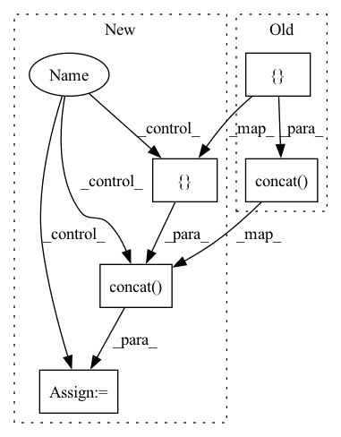

Pattern ID :25281
Before Change
bias_init = tf.constant_initializer(-tf.math.log((1 - 0.01) / 0.01).numpy())
class_features = det_header_pre(fpn_features, num_channels, head_depth, use_sep_conv, activation=activation, name="classifier_")
class_out = det_header_post(class_features, num_classes, num_anchors, bias_init, use_sep_conv, classifier_activation, name="classifier_")
outputs = tf.concat([bboxes_out, class_out, object_out], axis=-1) if use_object_scores else tf.concat([ bboxes_out, class_out, axis=-1)
else:
outputs = tf.concat([bboxes_out, object_out], axis=-1) if use_object_scores else bboxes_out
outputs = keras.layers.Activation("linear", dtype="float32", name="outputs_fp32")(outputs)
After Change
bias_init = initializers.constant(-math.log((1 - 0.01) / 0.01))
class_features = det_header_pre(fpn_features, num_channels, head_depth, use_sep_conv, activation=activation, name="classifier_")
class_out = det_header_post(class_features, num_classes, num_anchors, bias_init, use_sep_conv, classifier_activation, name="classifier_")
if use_object_scores :
outputs = functional.concat([bboxes_out, class_out, object_out], axis=-1)
else:
outputs = functional.concat([ bboxes_out, class_out, axis=-1)
else:
outputs = functional.concat([bboxes_out, object_out], axis=-1) if use_object_scores else bboxes_out
outputs = layers.Activation("linear", dtype="float32", name="outputs_fp32")(outputs)
In pattern: SUPERPATTERN
Frequency: 3
Non-data size: 5
Instances Fragment ID: 77202335
Project Name: leondgarse/keras_cv_attention_models
Commit Name: 4d4ea978b42024953a1eba7469530dec223545e0
Time: 2023-02-14
Author: leondgarse@gmail.com
File Name: keras_cv_attention_models/efficientdet/efficientdet.py
M Class Name: AnonimousClass
N Class Name: AnonimousClass
M Method Name: EfficientDet(22)
N Method Name: EfficientDet(22)
M Parent Class:
N Parent Class:
M File Name: keras_cv_attention_models/efficientdet/efficientdet.py
N File Name: keras_cv_attention_models/efficientdet/efficientdet.py
M Start Line: 168
M End Line: 200
N Start Line: 180
N End Line: 225
Before Change
else:
pick = preds[:, -1] == 1
valid_preds, valid_anchors = preds[pick], anchors[pick]
valid_preds = tf.concat([ valid_preds[:, :4], tf.expand_dims(tf.argmax(valid_preds[:, 4:-1], axis=-1), -1), axis=-1)
valid_label = decode_bboxes(valid_preds, valid_anchors)
show_image_with_bboxes(image, valid_label[:, :4], valid_label[:, -1], ax=ax, label_font_size=label_font_size)
fig.tight_layout()After Change
fig, axes = plt.subplots(rows, cols, figsize=(base_size * cols, base_size * rows))
axes = axes.flatten()
for ax, image, label in zip(axes, images, labels):
if label.shape[-1] == 5:
pick = label[:, -1] >= 0
valid_preds, valid_anchors = label[pick], anchors[pick]
else:
pick = label[:, -1] == 1
valid_preds, valid_anchors = label[pick], anchors[pick]
valid_label = tf.cast(tf.argmax(valid_preds[:, 4:-1], axis=-1), valid_preds.dtype)
valid_preds = tf.concat([ valid_preds[:, :4], tf.expand_dims(valid_label, -1), axis=-1)
valid_label = decode_bboxes(valid_preds, valid_anchors)
show_image_with_bboxes(image, valid_label[:, :4], valid_label[:, -1], ax=ax, label_font_size=label_font_size)
fig.tight_layout() Fragment ID: 77202338
Project Name: leondgarse/keras_cv_attention_models
Commit Name: 91d7f2277b424da41c9364f279e0598effb75b29
Time: 2022-01-28
Author: leondgarse@gmail.com
File Name: keras_cv_attention_models/coco/data.py
M Class Name: AnonimousClass
N Class Name: AnonimousClass
M Method Name: show_batch_sample(5)
N Method Name: show_batch_sample(5)
M Parent Class:
N Parent Class:
M File Name: keras_cv_attention_models/coco/data.py
N File Name: keras_cv_attention_models/coco/data.py
M Start Line: 329
M End Line: 335
N Start Line: 329
N End Line: 337
Before Change
if new_memory_length <= query_length or cache is None:
new_memories.append(hiddens[i][-new_memory_length:])
else:
new_memories.append(paddle.concat([ cache[i][:, -memory_length:], hiddens[i], axis=1) )
return new_memories
After Change
new_memory_length = memory_length + query_length
new_memories = cache if cache is not None else []
for i in range(len(hiddens)):
if cache is None:
new_memories.append((hiddens[i][-new_memory_length:]))
else:
new_memories[i] = paddle.concat([ cache[i][:, -memory_length:], hiddens[i], axis=1)
return new_memories
class GLMPretrainedModel(PretrainedModel): Fragment ID: 77202339
Project Name: paddlepaddle/paddlenlp
Commit Name: 1cdcc8291587c19bc38d610e3a058d327a71c58a
Time: 2023-03-23
Author: fangzeyang0904@hotmail.com
File Name: paddlenlp/transformers/glm/modeling.py
M Class Name: GLMStack
N Class Name: GLMStack
M Method Name: update_memories(3)
N Method Name: update_memories(3)
M Parent Class: nn.Layer
N Parent Class: nn.Layer
M File Name: paddlenlp/transformers/glm/modeling.py
N File Name: paddlenlp/transformers/glm/modeling.py
M Start Line: 387
M End Line: 395
N Start Line: 389
N End Line: 394